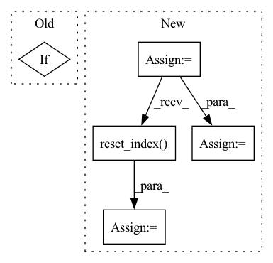

Pattern ID :25730
Before Change
for df in df_list:
if df["ds"].max() < threshold_time_stamp:
df_train.append(df.reset_index(drop=True))
elif After Change
df_val[key] = df_dict[key].copy(deep=True).reset_index(drop=True)
else:
df = df_dict[key].copy(deep=True)
n_train = len(df[df["ds"] < threshold_time_stamp])
split_idx_train = n_train + n_lags + n_forecasts - 1
split_idx_val = split_idx_train - n_lags if inputs_overbleed else split_idx_train
df_train[key] = df.copy(deep=True).iloc[:split_idx_train].reset_index(drop=True)
df_val[key] = df.copy(deep=True).iloc[split_idx_val:].reset_index(drop=True)
return df_train, df_val
In pattern: SUPERPATTERN
Frequency: 3
Non-data size: 5
Instances Fragment ID: 77993703
Project Name: ourownstory/neural_prophet
Commit Name: 6619741f934957dff2a7fa4ff66620772d41471f
Time: 2022-02-14
Author: ourownstory@users.noreply.github.com
File Name: neuralprophet/df_utils.py
M Class Name: AnonimousClass
N Class Name: AnonimousClass
M Method Name: split_considering_timestamp(5)
N Method Name: split_considering_timestamp(2)
M Parent Class:
N Parent Class:
M File Name: neuralprophet/df_utils.py
N File Name: neuralprophet/df_utils.py
M Start Line: 500
M End Line: 510
N Start Line: 526
N End Line: 552
Before Change
df_disk = dask_cudf.read_parquet(output_path, index=False).compute()
// Can directly compare the final ddf to the result if we didn"t shuffle
if not shuffle:
for col in df_disk:
assert_eq(result[col], df_disk[col])
else:After Change
// we don"t have a deterministic ordering here, especially when using
// a dask client with multiple workers - so we need to sort the values here
columns = ["label", "x", "y", "id"] + cat_names
got = result.sort_values(columns).reset_index(drop=True)
expect = df_disk.sort_values(columns).reset_index(drop=True)
assert_eq(got, expect)
Fragment ID: 77993698
Project Name: nvidia/nvtabular
Commit Name: 9218dd5b7d5244e860ddf45b637e3f482c157156
Time: 2021-02-10
Author: github@benfrederickson.com
File Name: tests/unit/test_dask_nvt.py
M Class Name: AnonimousClass
N Class Name: AnonimousClass
M Method Name: test_dask_workflow_api_dlrm(9)
N Method Name: test_dask_workflow_api_dlrm(9)
M Parent Class:
N Parent Class:
M File Name: tests/unit/test_dask_nvt.py
N File Name: tests/unit/test_dask_nvt.py
M Start Line: 93
M End Line: 122
N Start Line: 93
N End Line: 120
Before Change
for single_bin in prop_bins:
// If we have a low number of unique values for a property, the first bin (-inf, x) might be empty so
// check the count, and if empty filter out the bin
if single_bin["count"] == 0:
continue
display_range = _range_string(single_bin["start"], single_bin["stop"], bins_scale)After Change
return CheckResult(value=dict(result_value))
first_metric = display_df["Metric"][0]
if self.alternative_metrics is None:
display_df = display_df[display_df["Metric"] == first_metric]
top_properties = display_df[display_df["Metric"] == first_metric] \
.groupby("Property")[["Value"]] \
.agg(np.ptp).sort_values("Value", ascending=False).head(self.n_to_show) \
.reset_index() ["Property"]
display_df = display_df[display_df["Property"].isin(top_properties)]
fig = px.bar(
display_df,
x="Range", Fragment ID: 77993699
Project Name: deepchecks/deepchecks
Commit Name: b8898efaa6b30a00ba89ff3cc8cbce6bc7eb34bd
Time: 2022-04-12
Author: jonatan.lib@gmail.com
File Name: deepchecks/vision/checks/performance/image_segment_performance.py
M Class Name: ImageSegmentPerformance
N Class Name: ImageSegmentPerformance
M Method Name: compute(3)
N Method Name: compute(3)
M Parent Class: SingleDatasetCheck
N Parent Class: SingleDatasetCheck
M File Name: deepchecks/vision/checks/performance/image_segment_performance.py
N File Name: deepchecks/vision/checks/performance/image_segment_performance.py
M Start Line: 135
M End Line: 155
N Start Line: 135
N End Line: 170